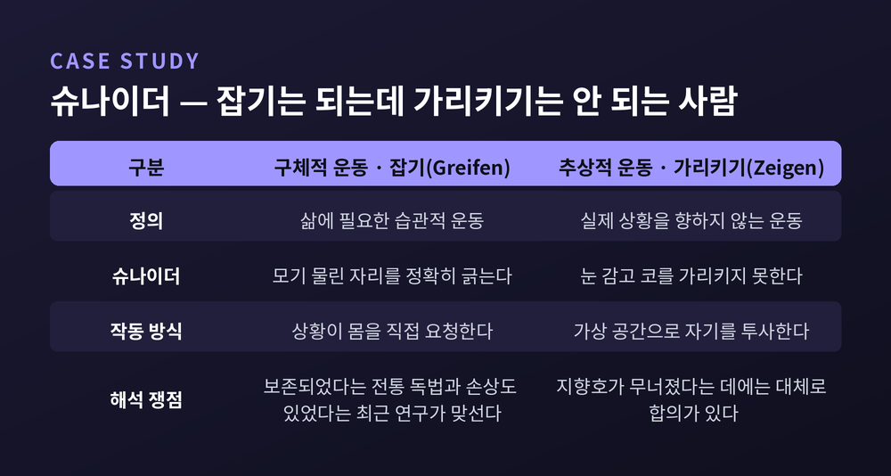

메를로퐁티 몸의 현상학, 지각하는 주체는 왜 의식이 아니라 몸인가

이번 글에서는 메를로퐁티의 몸의 현상학을 정리해 보겠습니다. 지각하는 주체가 의식이 아니라 몸이라는 주장이 무엇을 뜻하는지, 그리고 그가 왜 경험론과 주지주의를 동시에 무너뜨려야 했는지를 따라가려 합니다.
먼저 결론을 세 줄로 적겠습니다.
- 『지각의 현상학』(1945)은 감각을 원자로 보는 경험론과, 판단을 앞세우는 주지주의를 같은 오류의 두 얼굴로 봅니다.
- 그 대안이 신체도식(schéma corporel) — 몸은 공간 '안에' 있는 사물이 아니라 공간을 사는 '나는 할 수 있다'입니다.
- 이 발상은 지금 체화된 인지와 로봇공학, 그리고 AI의 기호 정초 논쟁 한복판에 다시 서 있습니다.
한 철학자의 이력이 남긴 것
모리스 메를로퐁티는 1908년 3월 14일 프랑스 로슈포르쉬르메르에서 태어났습니다. 1926년 고등사범학교에 입학해 시몬 드 보부아르, 클로드 레비스트로스와 함께 공부했습니다. 1929년에는 소르본에서 열린 후설의 강연을 직접 들었습니다.
결정적인 해는 1939년입니다. 그해 4월, 그는 벨기에 루뱅에 막 세워진 후설 아카이브를 외부인으로는 처음으로 방문합니다. 그곳에서 오이겐 핑크를 만나고 미간행 원고들을 열람합니다. 『이념들 II』와 『위기』의 후반부였습니다. 몸에 관한 후설의 미완의 사유가, 여섯 해 뒤 『지각의 현상학』으로 돌아옵니다.
1945년에는 사르트르·보부아르와 함께 『현대』를 창간했습니다. 1952년에는 44세의 나이로 콜레주 드 프랑스 철학 강좌 교수가 됩니다. 그 자리에 오른 역대 최연소였습니다.
1961년 5월 3일, 심장마비로 갑자기 세상을 떠납니다. 향년 53세. 책상 위에는 데카르트의 『굴절광학』이 펼쳐져 있었다고 전합니다. 평생 데카르트와 씨름한 사람이 데카르트를 읽다 멈춘 셈입니다.
경험론과 주지주의, 같은 오류의 두 얼굴
『지각의 현상학』에는 뚜렷한 리듬이 있습니다. 한 주제를 다룰 때마다 먼저 경험론의 설명을 놓고, 다음에 주지주의의 대안을 놓고, 마지막에 제3의 길로 넘어갑니다.
경험론은 지각을 감각의 다발로 봅니다. 감각기관이 받아 뇌로 전달하는 고립된 데이터점들이지요. 여기에는 항상성 가설이 깔려 있습니다. 자극과 감각 사이에 고정된 일대일 대응이 있다는 가정입니다.
주지주의는 반대편에서 옵니다. 데카르트에서 칸트로 이어지는 이 노선은, 원재료에 개념과 판단을 적용하는 일로 지각을 재구성합니다. 정신이 혼돈에 질서를 부여한다는 그림입니다.
메를로퐁티의 반박은 날카롭습니다. 주지주의는 경험론의 출발점을 그대로 물려받았습니다. 흩어진 원자적 감각이라는 전제 말입니다. 잘못된 전제 위에 세운 교정은 여전히 잘못된 전제 위에 있습니다.
둘의 진짜 공통 오류는 따로 있습니다. 지각의 '결과'를 지각 '경험' 안으로 되돌려 읽는다는 것입니다. 완성된 객관 세계를 먼저 상정하고, 그것으로 지각을 설명합니다. 그러면 지각에는 참과 환상을 구별할 내적 근거가 남지 않습니다.
『지각의 현상학』 28면의 한 문장이 이를 압축합니다. "첫 번째 경우 의식은 너무 가난하고, 두 번째 경우 너무 부유하다."
경험론은 우리가 무엇을 찾는지 알아야 한다는 점을 보지 못하고, 주지주의는 우리가 그것을 몰라야 한다는 점을 보지 못합니다. 둘 다 배우는 중의 의식을 설명하지 못하는 것입니다.
환상지 — 설명이 두 번 실패하는 자리
이 비판이 가장 선명하게 드러나는 곳이 환상지입니다. 팔을 잃은 사람이 없는 팔의 존재를 계속 느끼는 현상이지요.
생리학적 설명이 먼저 시도됩니다. 절단면 신경의 오발화라는 것입니다. 그런데 받아들일 사지 자체가 없습니다. 더 큰 문제는 이것입니다. 왜 환상지는 무작위 환각이 아니라 언제나 과제를 향해 정향된 '기능하는' 팔로 나타날까요.
심리학적 설명이 뒤를 잇습니다. 상실한 팔에 대한 기억, 혹은 상실을 받아들이지 않으려는 거부라는 것입니다. 이 설명은 몸을 순수한 표상으로 만들어버립니다.
메를로퐁티의 답은 제3의 층위입니다. 환상지는 사물들이 여전히 조작 가능한 것으로 암묵적으로 받아들여질 때 경험됩니다. '물리적'과 '심리적'이라는 추상적 구별 이전에, 몸으로 실천적 환경에 자기를 던지는 사태 — 그가 세계-에의-존재(être au monde)라 부른 것입니다.
그의 문장은 짧습니다. "환상 팔은 팔의 표상이 아니라, 한 팔의 양의적 현전이다."
여기서 몸의 두 층이 갈라집니다. 습관적 몸과 현재의 몸입니다. 결손 없이 세계에서 기능하던 습관적 몸은 사지를 잃은 현재의 몸과 화해하지 못합니다. 팔의 부재를 알면서도 놓아주지 않는 것이지요. 메를로퐁티는 이를 정신분석의 억압에 빗댑니다.
신체도식 — 몸은 공간에 있지 않고 공간을 삽니다
그가 이 자리에 놓는 개념이 신체도식입니다. 자기 운동에 대한 감각을 가능하게 하는, 몸짓과 공간적 등가물들의 선의식적 체계입니다. 표상이 아니라 체계라는 점이 중요합니다. 우리는 그것을 떠올리지 않고 그것으로 삽니다.
사물은 위치적 공간성을 갖습니다. 좌표 위의 한 점이지요. 그러나 몸은 상황적 공간성을 갖습니다. 실제적이거나 가능한 과제를 향해 정향되어 있습니다.
그래서 이런 결론이 나옵니다. 몸은 공간 안에 있지 않습니다. 몸은 공간을 살고, 공간에 거주합니다.
이 관계는 지향적이되, '나는 생각한다'가 아니라 '나는 할 수 있다(je peux)'의 양태입니다. 후설에게서 가져온 표현입니다. 메를로퐁티는 여기에 한 줄을 덧붙입니다. "'나는 할 수 있다'가 '나는 안다'의 가능성에 선행하고 그것을 조건 짓는다."
이해가 무엇이냐는 물음에도 그는 몸으로 답합니다. "이해한다는 것은 우리가 겨냥하는 것과 주어지는 것 사이의 조화를 경험하는 것"이며, "몸은 세계 안에서 우리의 정박지다."
자기 몸이 다른 모든 사물과 다른 이유는 네 가지입니다. 전부를 직접 볼 수 없으면서도 지각장에 항구적으로 남아 있고, 한 손이 다른 손을 만지는 이중 감각을 가지며, 표상이 아닌 정서를 겪고, 자기 운동을 직접 느낍니다.
대상은 나에게서 멀어질 수 있는 한에서만 대상입니다. 그 현전은 가능한 부재를 함축합니다. 그러나 내 몸의 항구성은 종류가 전혀 다릅니다.
슈나이더 — 잡을 수는 있는데 가리키지 못하는 사람
추상적 논증만으로는 부족했습니다. 그래서 메를로퐁티는 한 환자의 사례를 책 전체에 걸쳐 끌고 갑니다.
요한 슈나이더는 독일군 병사였습니다. 1915년 6월 4일, 포탄 파편이 그의 뇌 좌측 두정-후두엽에 박혔습니다. 신경학자 아데마르 겔프와 쿠르트 골트슈타인이 그를 연구했습니다.
슈나이더는 이상한 방식으로 손상되었습니다. 구체적 운동, 곧 삶에 필요한 습관적 운동은 해냅니다. 모기가 물면 정확히 그 자리를 긁습니다. 그런데 추상적 운동, 곧 어떤 실제 상황을 향하지 않는 운동은 하지 못합니다. 눈을 감고 코를 가리켜보라고 하면 실패합니다.
독일어로 말하면 잡기(Greifen)는 되는데 가리키기(Zeigen)는 안 되는 것입니다.

메를로퐁티가 읽어낸 것은 이렇습니다. 슈나이더는 가상 공간으로 자기를 '투사'하는 능력을 잃었습니다. 더 근본적으로는 지향호(arc intentionnel)가 무너진 것입니다. 우리 주위에 과거와 미래, 인간적 환경, 물리적·도덕적 상황을 투사하는 그 구조 말입니다.
슈나이더가 정상적 공간 능력을 대신해 쓰는 병리적 대체들이, 역설적으로 건강한 몸이 평소 공간과 맺는 관계를 드러냅니다. 무너진 자리에서 구조가 보이는 셈입니다.
다만 한 가지는 정직하게 적어두겠습니다. 이 사례 해석에는 아직 합의가 없습니다. 전통적 독법은 슈나이더의 구체적 운동이 보존되었다고 보지만, 2009년 이후 연구들은 구체적 운동에도 손상이 있었다고 지적합니다. 메를로퐁티의 논증이 임상 사실을 다소 단순화했을 가능성이 남아 있습니다.
지팡이와 자동차 — 습관은 손에 든 지식입니다
몸이 세계와 맺는 관계는 고정되어 있지 않습니다. 습관이 그것을 넓힙니다.
메를로퐁티에게 습관은 기계적 반복이 아닙니다. 오히려 역량에 가깝습니다. 조건이 달라져도 동원할 수 있는 유연한 기술이지요. 습관이 무엇이냐는 물음에 그는 이렇게 답합니다. "그것은 손에 든 지식이다."
손에 든 지식은 신체적 노력이 이루어질 때에만 나타납니다. 그 노력에서 떼어내 문장으로 적을 수 없습니다.
가장 유명한 사례가 맹인의 지팡이입니다. 숙련된 사용자에게 지팡이는 손끝에 쥐어진 대상이 아닙니다. 확장된 감각기관입니다. 그는 지팡이를 느끼지 않고 지팡이를 통해 땅을 느낍니다. 메를로퐁티의 표현을 빌리면, 모자나 자동차나 지팡이에 익숙해진다는 것은 그 안으로 이식되는 일이자 그것을 우리 몸의 부피 안으로 통합하는 일입니다.
새 악기를 익히는 오르가니스트도 같습니다. 도구·식기·악기·차량이 모두 이 목록에 들어갑니다. 통합될 때마다 신체도식은 재배치됩니다.
운전이 더 쉬운 예일지 모르겠습니다. 주차할 때 우리는 차의 폭과 회전반경을 '압니다'. 그런데 그 앎은 계산이 아닙니다. 차에 대해 생각하는 것이 아니라 차의 관점에서 생각하는 것에 가깝습니다.
『행동의 구조』(1942)에는 축구장 이야기가 나옵니다. 경기 중인 선수에게 경기장은 대상이 아닙니다. 힘의 선들로 관통되어 있고 구역들로 분절되어 있으며, 각 구역이 일정한 행위를 요청합니다. 선수는 경기장과 하나가 되어, 자기 몸의 수직면과 수평면만큼이나 직접적으로 골대의 방향을 느낍니다.
물론 대가도 있습니다. 메를로퐁티는 그것도 적어둡니다. 우리 실존을 중심 잡게 해주는 바로 그것이 동시에 우리를 완전히 중심 잡지 못하게 합니다. 몸의 익명성은 자유이면서 동시에 예속입니다.
살과 가역성 — 만지는 손과 만져지는 손
후기의 메를로퐁티는 한 걸음 더 갑니다. 1959년부터 집필한 『보이는 것과 보이지 않는 것』입니다. 미완으로 남았고, 1964년 친구이자 제자였던 클로드 르포르가 편집해 출간했습니다.
출발점은 만지는 손과 만져지는 손입니다. 오른손으로 왼손을 만질 때, 왼손은 만져지는 사물입니다. 그런데 역할을 바꿀 수 있습니다. 그 순간 만져지던 손이 만지는 손이 됩니다.
여기서 세 가지가 나옵니다. 첫째, 감각하면서 감각되는 몸은 주체와 대상 사이의 친족성을 증명합니다. 둘째, 그 관계는 가역적입니다. 안면과 이면처럼, 혹은 하나의 원환 운동의 두 구간처럼요.
셋째가 가장 중요합니다. 둘은 결코 엄밀히 일치하지 않습니다. 언제나 간극(écart)이 남습니다. 왼손으로 오른손을 느끼는 순간, 그만큼 오른손으로 왼손을 만지기를 멈춥니다.
그래서 그는 이렇게 적습니다. "몸의 자기 자신에 대한 반성은 언제나 마지막 순간에 좌초한다."
이 구조에 그가 붙인 이름이 살(la chair)입니다. 살은 피부나 근육이 아닙니다. 몸과 사물 사이의 쌍방향 교환이며, 개별자와 이념 사이의 '일반적인 것'입니다. 그는 전통 철학의 어떤 개념에도 대응하지 않는다고 못 박습니다. 굳이 가장 가까운 것을 찾자면 물·공기·흙·불 같은 고전적 의미의 원소라고요.
살의 일반성은 서로 다른 몸들에까지 미칩니다. 내 두 손이 서로 소통하듯, 나는 타인의 감성을 만질 수 있습니다. 그의 문장은 간결합니다. "악수 또한 가역적이다."
예전에 그는 몸을 '몸-주체'라 불렀습니다. 지금, 그러니까 후기의 그는 그 말을 쓰지 않습니다. 주체라는 단어가 남긴 의식철학의 잔재조차 털어내려 한 것으로 보입니다. 스스로도 이렇게 썼습니다. 내가 암묵적 코기토라 부른 것은 불가능하다고요.
체화된 인지, 그리고 지금의 AI
이 논의가 철학사 안에만 머물렀다면 이 글은 여기서 끝났을 것입니다.
1972년 휴버트 드레퓌스가 『컴퓨터가 할 수 없는 것: 인공 이성 비판』을 냅니다. 그는 메를로퐁티 『의미와 무의미』의 영역자이기도 했습니다. 그가 해체한 초기 AI의 세 가정은 이렇습니다. 마음은 형식 규칙을 실행하는 디지털 컴퓨터처럼 작동한다. 모든 지식은 명제로 명시될 수 있다. 세계는 기호로 부호화되기를 기다리는 맥락 독립적 사실들로 이루어져 있다.
세 가정 모두 슈나이더가 잃어버린 그것, 곧 몸이 상황과 맺는 선반성적 관계를 빼놓고 있습니다. 드레퓌스의 정식은 이렇습니다. "능숙한 대처는 그 목표에 대한 심적 표상을 요구하지 않는다."
1991년에는 바렐라·톰슨·로쉬가 『체화된 마음』을 냅니다. 메를로퐁티의 관점을 주입해 인지과학의 방향을 바꾸려는 시도였습니다. 현상학과 신경과학, 그리고 상황지어진 로봇공학을 한자리에 놓았습니다. 핵심 주장은 강경합니다. 인지는 계산이나 내적 표상이 아니라, 살아 있는 것들의 기본 활동이라는 것입니다.
2005년 숀 갤러거는 『몸은 어떻게 마음을 형성하는가』에서 메를로퐁티의 용어를 임상적으로 정밀화합니다. 신체도식은 자각 없이 작동하는 감각-운동 능력의 체계이고, 신체이미지는 자기 몸에 관한 의식적 지각·태도·믿음의 체계입니다. 둘은 이중 해리 관계에 있는 다른 체계입니다. 신경심리학적 증거가 이를 뒷받침합니다.
그리고 지금입니다. 대규모 언어모델의 성능이 올라가면서 기호 정초 문제가 다시 불려 나왔습니다. 신경과학의 관점에서 자연 언어는 감각과 감각운동 양상에 체화되고 정초되어 있습니다. 교차양상적 통합을 통해 습득된다는 것이지요. 최신 멀티모달 모델들이 예측과 가정적 추론 과제에서 인간에 크게 못 미친다는 평가도 이 맥락에서 읽힙니다.
2026년 『신경과학과 의식』에 실린 한 논문은 현행 AI 로봇공학이 메를로퐁티가 말한 '말해진 말'의 영역 안에서 작동한다고 지적합니다. 이미 말해진 것을 재배열할 뿐, 말하는 말의 자리에는 아직 이르지 못했다는 진단입니다.
여든 해 전의 책이 여전히 유효한 질문을 던지는 셈입니다.
정리하면 이렇습니다.
메를로퐁티는 의식을 몸으로 대체하려 한 것이 아닙니다. 의식과 몸을 나누는 그 칼금 자체가 지각 경험에는 아직 없다고 말한 것입니다. 그래서 그의 몸은 대상도 주체도 아닌, 그 사이의 제3의 존재 유형입니다.
"나는 내 몸 앞에 있지 않다. 나는 내 몸이다."
아직 이 철학이 모든 것을 해결했다고 말하기는 어렵습니다. 슈나이더 해석은 지금도 논쟁 중이고, 후기 존재론은 미완으로 남았습니다. 그도 말년에 자기 책이 여전히 의식의 철학 안에 갇혀 있었다고 인정했습니다.
그럼에도 남는 것이 있습니다. 『지각의 현상학』의 마지막 문장은 이렇습니다. "인간은 관계들의 망이다."
지각하는 것이 의식이냐 몸이냐고 물으신다면, 저는 그 물음을 다시 묻겠다고 답하겠습니다. 몸이 이미 세계를 향해 기울어 있지 않았다면, 의식은 애초에 무엇을 향해 있었을까요.